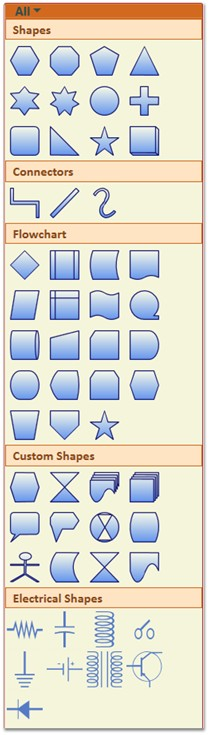

The SymbolPalette can be displayed by setting the IsSymbolPaletteEnabled property to True. By default, this property is disabled.
The following code can be used to enable the SymbolPalette.
|
[XAML]
<Window x:Class="WpfApplication1.Window1" xmlns="http://schemas.microsoft.com/winfx/2006/xaml/presentation" xmlns:x="http://schemas.microsoft.com/winfx/2006/xaml" Title="EssentialDiagramWPF" Height="400" Width="600" xmlns:sfdiagram="clr-namespace:Syncfusion.Windows.Diagram;assembly=Syncfusion.Diagram.WPF" xmlns:local="clr-namespace:WpfApplication1"> <Grid Name="diagramgrid"> <sfdiagram:DiagramControl IsSymbolPaletteEnabled="True"> </sfdiagram:DiagramControl> </Grid> </Window> |
|
[C#]
DiagramControl diagramcontrol = new DiagramControl(); diagramcontrol.IsSymbolPaletteEnabled = true; |
|
[VB]
Dim diagramcontrol As New DiagramControl() diagramcontrol.IsSymbolPaletteEnabled = True |

Figure 178: SymbolPalette